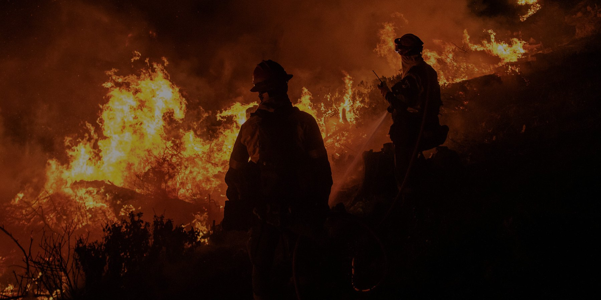

The Moat
One trailer, eight big-gun towers along a street. Two people have it running in under an hour, and it runs itself on live fire weather once it's on.


Founded 2019, on the fireline since 2021. Grown from 30 to 160+ seasonal staff running Type II and III crews, wildfire and crew training, and falling, danger tree and vegetation work across BC, Alberta and the Yukon. The Moat was designed by people who have done SPU work.

Nick Hill

Brian Mueller

Dakotah Daily

Mehran Mehrandezh
Amir Moshtaghioun
Yassine Bouhamed
The convection column throws burning debris out ahead of the front. Structures light up hours before the flames get there.
- Embers land in the dry ground between houses, not just on roofs.
- Spot fires split your crew at the worst possible moment.
- A defended street becomes a new fire source, house to house.


Structure protection units pre-wet buildings and have saved thousands of homes. We've run them. We also know where they stop.
- Hose lay time. Roughly an hour per structure. A five-person crew spends most of a shift plumbing 25 to 30 homes.
- Roof and gutter work. Ladders, roof spikes, gutter mounts, and a hundred-plus small heads to place, check and maintain.
- Only the buildings get wet. The gap between properties stays dry, and that's where the embers land.
- The Moat is meant to sit next to an SPU, not replace one. SPU on the structures, Moat on the ground between them.
- 8 Nelson Big Gun SR100 towers in one straight line along the road shoulder, 500 to 800 m long, 6 to 8 ha protected.
- 2 or 3 towers fire at a time. A valve on every tower sequences them, so the pumps are sized for the running set, not all eight.
- Two UP4 portable fire pumps, about 50 kW each, on a common manifold. Run them together, or one at a time for redundancy.
- Two-person crew, under an hour from arrival to water on the ground.
- Every tower has its own radio, power and sensors. Once the crew walks away, the line runs itself on live fire weather and reports back over satellite.

Full line
Trailer at the centre, four towers each side at 80 m centres, one straight line along a street or road edge between two rows of structures.
Half line, single pump confirm
The design allows four towers off one side on one pump, with the trailer at the end of the run.
Remote pump at the water confirm
Pumps carried out to the pond, hydrant or tank and run by radio from the trailer. The trailer stays at the line.
Split line confirm
The design allows two groups of four with the pumps and trunk line between them.
- Two UP4 pumps share a common manifold, so they run together or on their own.
- Together they make the pressure and flow the line needs. On their own, one pump is your backup.
- The manifold outlet feeds the trunk line. Hose sizes and lengths carried: confirm
- The trunk line has branches out to each tower.
- A pressure regulator on every tower evens out the pressure down the line. Max 80 psi at the tower.
- Source can be a hydrant, open water, or a tank. Minimum volume and refill rate: confirm
- Every tower has a valve, so towers turn on and off in sequence. Two or three run at a time.
- Running in sequence gets the most out of the pump you have and the water you can reach.
- That's what lets you run really big sprinklers, a lot of them, over a big area on a portable pump and a modest source.
- Irrigation has worked this way for decades. Proven, not new.
- 1Park the trailer at the centre of the planned line. Chock it, drop the tongue.
- 2Pull the towers from the rear slots and get them out to their marks: 40, 120, 200 and 280 m each side.How they travel out (carried, wheeled, or on the truck): confirm
- 3Lay trunk line from the manifold out each side. Branch to each tower.Hose sizes and lengths: confirm
- 4Set the pumps. At the trailer if the water is close. If not, carry them to the source: hard suction into a pond or tank, or straight onto a hydrant.Source minimums and draft lift: confirm
- 5Power up. Towers check in on the dashboard. Confirm every valve reports.Control power source: confirm
- 6Prime and pressure test. Regulators set, target under 80 psi at the towers.
- 7Set the fire-weather thresholds, or take the defaults. Walk away.
- Monitor from the dashboard, on site or from town. The line runs itself and tells you if a tower goes down.Time per step is not broken out yet. The whole job: two people, under an hour.
Packed up: looks like your SPU
- Hose up on the wall, fittings and jewellery stored alongside, same as a normal SPU.
- Slots at the back for all eight towers and the hard suction hose.
- Rear door opens on the two UP4 pumps and the manifold, where the hoses hook up.
Set up: all wireless
- Every valve is switched from the LoRa radio in the trailer. No walking the line to turn heads on.
- Pumps are on the radio too, so a UP4 can be carried down to the water and still run from the trailer.
- The link is two-way. Towers report back, so you know a tower is down before you lose ground to it.
| The line | |
|---|---|
| Towers | 8 Nelson Big Gun SR100 |
| Trajectory | 43°, clears a two-storey roofline from the street |
| Tower spacing | 80 m centres (40 / 120 / 200 / 280 m out from the trailer, each side) |
| Throw per tower | About 48 m, alternating north and south |
| Line length | 500 to 800 m |
| Protected zone | 6 to 8 ha |
| Towers firing at once | 2 or 3, sequenced by a valve on every tower |
| Max pressure at tower | 80 psi, regulator on every tower |
| Flow per tower / total flow | confirm |
| Tower height, mast, footprint, anchoring | confirm |
| Water | |
| Pumps | 2 × UP4 portable fire pumps, about 50 kW each |
| Plumbing | Common manifold, trunk line, branch lines to towers. Pumps run together or independently, and can move to the source |
| Hose carried (sizes, total length) | confirm |
| Water source minimum, refill rate, draft lift, run time per tank | confirm |
| Crew and setup | |
|---|---|
| Crew | 2 people |
| Setup time | Under 1 hour, arrival to running |
| Packing | SPU style: hose on the wall, fittings alongside, tower slots and hard suction at the back, pumps and manifold behind the rear door |
| Control | |
| Control link | LoRa radio from the trailer to every valve and pump, two-way. Range: confirm |
| Backhaul | Satellite. No cell coverage needed |
| Monitoring | One dashboard: flow, pressure, water, fire weather. On site or remote |
| Operating logic | Live fire weather (CFFDRS FFMC and ember-ignition thresholds) decides when and how much to spray. Autonomous once running |
| Power for controls | confirm |
| Trailer | |
| Trailer size, GVWR, tow vehicle | confirm |
| Operating temperature, winterization | confirm |
Same as your SPU
- Forestry hose and fittings you already carry.
- Portable fire pumps you already know how to run.
- Hard suction and drafting, same as always.
- Hose on the wall, gear in bins, tower slots at the back.
- A trailer you tow with a pickup. confirm
Different
- 8 big guns instead of 100-plus small heads.
- Wets the ground between structures as well as the roofs.
- No ladders, gutters or roof spikes.
- Valves and pumps switch from the trailer or a phone. Nobody walks the line to turn heads on.
- One hour and two people, instead of most of a shift and a crew.
- Runs on fire weather, so it isn't dumping water all night for nothing.
- Status from every tower. You know a head is dead before you lose ground to it.
- Pumps can sit at the water while the trailer sits at the line.
Open data in, a defensible line out. Give us the address and we'll have tower positions, the water path and the protected zone worked out before the trailer leaves the yard.
Real CAD, real spacing: eight towers on the shoulder of one street at 80 m centres, the trailer at the crossing, jets alternating north and south across a 48 m throw.
Watch where embers will land and put exactly enough water there, nowhere else.
- Live weather on site tells the system where embers will land.
- CFFDRS fine-fuel moisture (FFMC) and ember-ignition thresholds meter the water the fuels need, then re-wet only as they dry.
- Tower-by-tower sequencing covers the whole line on pumps sized for the running set.
- Spray and pump cycling adjust themselves as conditions change.
- LoRa radio to every tower, satellite backhaul so no cell coverage is needed, and the line keeps running if comms drop.
- One dashboard with live flow, pressure, water and fire weather.
| The Moat | Type 2 SPU trailer | Single robotic cannon | Telescopic mist tower | |
|---|---|---|---|---|
| What it does | Pre-wets the ground between structures along a line, before the front arrives | Wets the structures themselves, roof and gutter, one property at a time | Point suppression: thermal camera finds the hottest spot and hits it | Wind-carried mist curtain downwind of one tall mast |
| Crew | 2 | About 5 | 1 | 1 or 2 |
| Setup | Under 1 hour for the full line | About 1 hour per structure, most of a shift for 25 to 30 homes | 10 to 15 minutes | 10 to 40 minutes |
| Coverage | 6 to 8 ha along a 500 to 800 m line | The buildings and their footprint; the gaps stay dry | About 65 m throw, roughly 1.3 ha at one point | Swings with wind: 0.4 to 7 ha |
| Heads | 8 big guns, valve on each, 2 or 3 running | 100-plus small sprinklers, hand-placed | 1 cannon | 1 cannon on a 30 m mast |
| Runs itself | Yes. Fire-weather logic, remote monitoring, two-way status | No. Manual valves, crew stays | Auto-aims once it's up | Runs continuously once it's up |
The trailer comes first. Longer term, the same controls scale to HydroDome, a permanent installation of fixed towers built into a community: always in place, one button to start, tied into the municipal water system, and built to run when the grid is down. The first envisioned pilot is Fort St. James, BC, with about 20 towers over the hospital, emergency shelter and municipal core.

A defence line on the ground between structures, up in an hour and running before the fire arrives.
Dakotah Daily 307 699 0418
